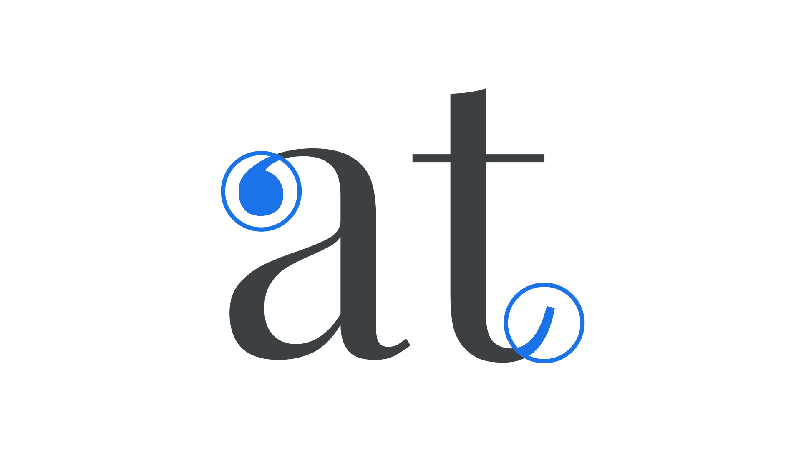

Terminal
By Google Fonts Knowledge contributors · Google Fonts Knowledge.
Original article · Source on GitHub · CC BY-SA 4.0. Text, illustrations and existing credits reproduced from the licensed Knowledge repository. Open Shelf adapted the layout and links; these adaptations are also CC BY-SA 4.0. No endorsement implied.
In type design, a terminal refers to the ending of the stroke. The way a type designer treats terminals is a key factor in the overall typeface design, and has significant effects on legibility as well as stylistic expression.

Terminals come in many forms, such as the single-serifs on the top and bottom bar of an uppercase “E,” double-serifs on the middle bar of the “E,” balls on a lowercase “a,” flared serifs (where the serif is wider than the stem), or virtually any shape a stroke ends with—whether serifed or not.